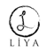

Eğiten, Düşündüren ve
Geliştiren
ZEKÂ SORULARI
ISBN: 978-605-5143-44-2
Liya Kitap / 14
Yayına Hazırlayan
Şafak Bulut
Genel Yayın Yönetmeni
Mustafa Demirer
Kapak Tasarımı
Leyla Çelik
I. Baskı: Haziran 2013
Baskı-Cilt: Melisa Matbaası
Sertifika No: 12088
Yayıncı Sertifika No: 18439
© Bu kitabın her hakkı saklıdır.
Yayıncının izni olmaksızın çoğaltılamaz,
kaynak göstermek suretiyle alıntı yapılabilir.
Liya Kitap
Dr. Mediha Eldem Sok. No: 60/2
Kızılay/ANKARA
Tel-Fax: (0.312) 432 14 89
Liya Kitap, Panama Yayıncılık’ın tescilli markasıdır.